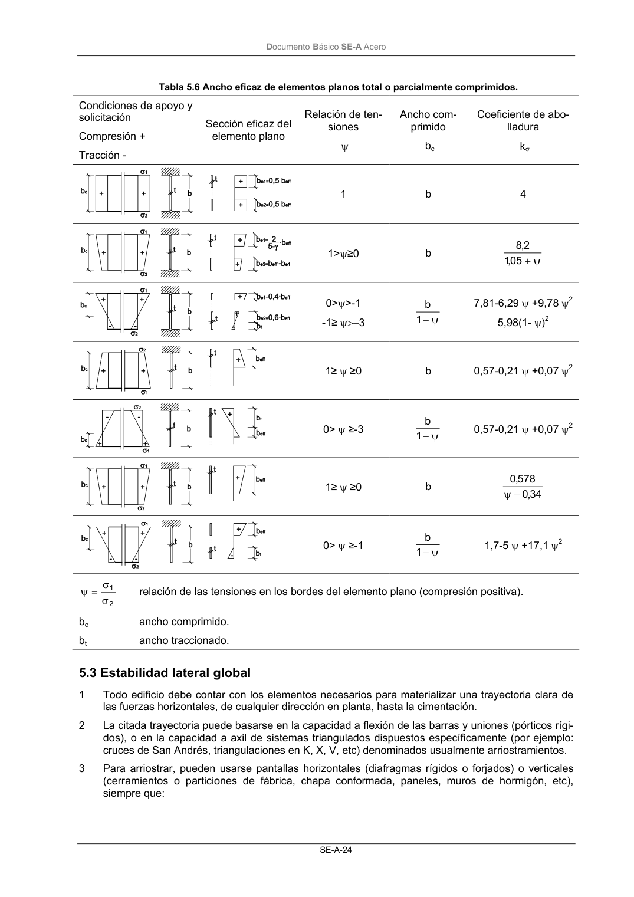

DB-SE-A · Fragmento de PDF p26 · versión 2007-10-23 · capa oficial
Formatos: JSON compacto · Markdown · PDF fuente
Ámbito del documento · texto del ámbito · documento y tablas
ID técnico a0047 · PDF pág. 26 · jerarquía no validada por persona · no es capítulo: sin_linea_de_encabezado · padre: raíz · literal original en el contenido: «Sección eficaz del elemento plano»
Sección eficaz del elemento plano elemento plano Relación de ten- siones ψ Ancho com- primido bc Coeficiente de abo- lladura kσ 1 b 4 1>ψ≥0 b ψ + 05 ,1 2,8 0>ψ>-1 -1≥ ψ>−3 ψ − 1 b 7,81-6,29 ψ +9,78 ψ2 5,98(1- ψ)2 1≥ ψ ≥0 b 0,57-0,21 ψ +0,07 ψ2 0> ψ ≥-3 ψ − 1 b 0,57-0,21 ψ +0,07 ψ2 1≥ ψ ≥0 b 34 ,0 578 ,0 + ψ 0> ψ ≥-1 ψ − 1 b 1,7-5 ψ +17,1 ψ2 2 1 σ σ = ψ relación de las tensiones en los bordes del elemento plano (compresión positiva). bc ancho comprimido. bt ancho traccionado.

PDF fuente redistribuible: copia fiel enlazada en esta página (SHA256 verificado).